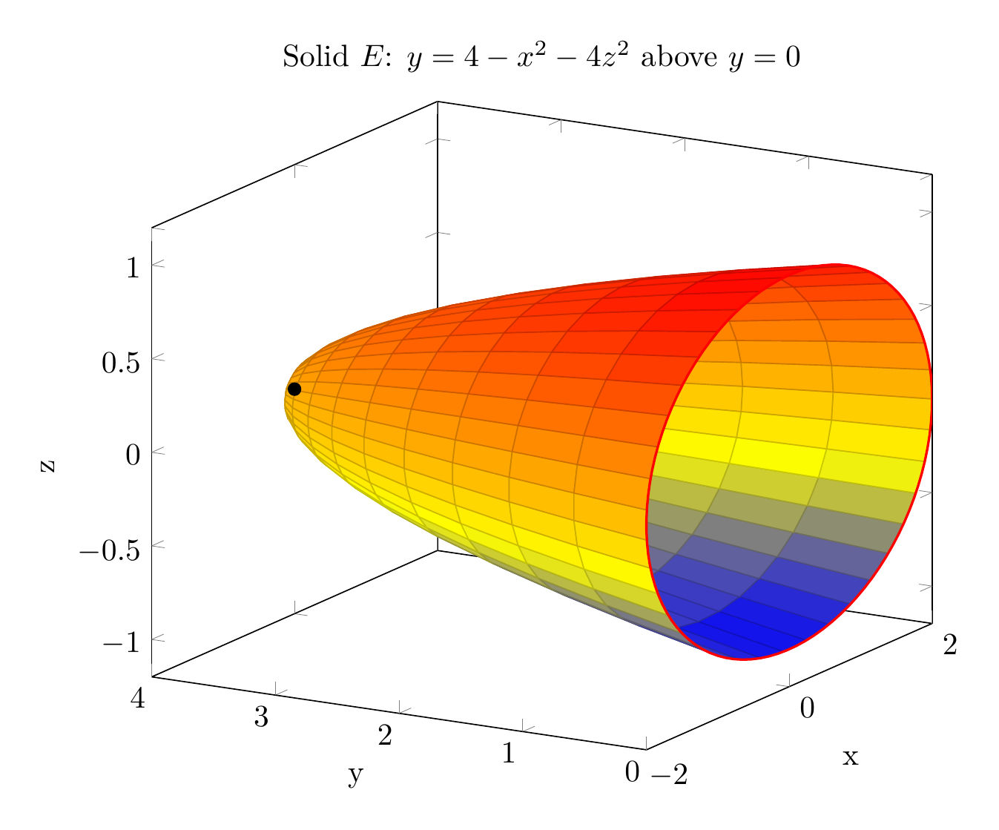

Please solve the problem in the following image.
(Image `20260928_232527_295267_utc_0800_0.png`. Alt text: Image: human_20260928_232527_295267_utc_0800)
20260928_232527_295267_utc_0800_0.png
End of problem
Answer
# Expressing $\iiint_E f(x,y,z)\,dV$ in Six Orders
**The solid.** $E$ is bounded by the elliptic paraboloid $y = 4 - x^2 - 4z^2$ (opening toward $-y$, vertex at $(0,4,0)$) and the plane $y = 0$. The paraboloid meets $y=0$ where $x^2 + 4z^2 = 4$, i.e. the ellipse $\dfrac{x^2}{4} + z^2 = 1$ in the $xz$-plane. So $E$ sits above $y = 0$ and below the paraboloid:
$$
E = \{(x,y,z) : 0 \le y \le 4 - x^2 - 4z^2,\; x^2 + 4z^2 \le 4\}.
$$
**Two key projections (shadows).** Every order of integration is built from one of two planar regions:
- $R_{xz}$ (projecting along $y$): the ellipse $x^2 + 4z^2 \le 4$, i.e. $-2 \le x \le 2$, $-\tfrac{1}{2}\sqrt{4-x^2} \le z \le \tfrac{1}{2}\sqrt{4-x^2}$.
- $R_{xy}$ (projecting along $z$): for fixed $(x,y)$, a $z$-bound exists iff $4 - x^2 - y \ge 0$, giving $-2 \le x \le 2$, $0 \le y \le 4 - x^2$ (a parabolic region).
The $yz$-shadow is $y \le 4 - 4z^2$ with $-1 \le z \le 1$ (a parabola in the $yz$-plane), used implicitly below.
## Orders ending in $z$ (project onto $xy$-plane, region $R_{xy}$)
$$
\int_{-2}^{2} \int_{0}^{4-x^2} \int_{-\frac{1}{2}\sqrt{4-x^2-y}}^{\frac{1}{2}\sqrt{4-x^2-y}} f(x,y,z)\,dz\,dy\,dx
$$
$$
\int_{0}^{4} \int_{-\sqrt{4-y}}^{\sqrt{4-y}} \int_{-\frac{1}{2}\sqrt{4-x^2-y}}^{\frac{1}{2}\sqrt{4-x^2-y}} f(x,y,z)\,dz\,dx\,dy
$$
(In the second form, fixing $y$ gives $x^2 \le 4 - y$ from $4 - x^2 - y \ge 0$.)
## Orders ending in $y$ (project onto $xz$-plane, region $R_{xz}$)
$$
\int_{-2}^{2} \int_{-\frac{1}{2}\sqrt{4-x^2}}^{\frac{1}{2}\sqrt{4-x^2}} \int_{0}^{4-x^2-4z^2} f(x,y,z)\,dy\,dz\,dx
$$
$$
\int_{-1}^{1} \int_{-2\sqrt{1-z^2}}^{2\sqrt{1-z^2}} \int_{0}^{4-x^2-4z^2} f(x,y,z)\,dy\,dx\,dz
$$
(In the second form, fixing $z$ gives $x^2 \le 4 - 4z^2$.)
## Orders ending in $x$ (project onto $yz$-plane, region $y \le 4 - 4z^2$)
Solving $y = 4 - x^2 - 4z^2$ for $x$ gives $x = \pm\sqrt{4 - y - 4z^2}$, valid where $y + 4z^2 \le 4$:
$$
\int_{-1}^{1} \int_{0}^{4-4z^2} \int_{-\sqrt{4-y-4z^2}}^{\sqrt{4-y-4z^2}} f(x,y,z)\,dx\,dy\,dz
$$
$$
\int_{0}^{4} \int_{-\frac{1}{2}\sqrt{4-y}}^{\frac{1}{2}\sqrt{4-y}} \int_{-\sqrt{4-y-4z^2}}^{\sqrt{4-y-4z^2}} f(x,y,z)\,dx\,dz\,dy
$$
**Sanity check.** Taking $f \equiv 1$, the first $y$-inner order gives $V = \iint_{R_{xz}} (4 - x^2 - 4z^2)\,dA = 8\pi \approx 12.566$, confirmed by Monte Carlo simulation ($\approx 12.569$). All six iterated integrals describe the same volume, so the bounds are consistent.
**How to build such bounds yourself (the general method):**
1. Find where the bounding surfaces intersect to get the footprint curve (here $x^2 + 4z^2 = 4$ at $y=0$).
2. Choose which variable is innermost; solve the surface equations for its bounds as functions of the other two.
3. Project onto the plane of the remaining two variables to get a 2D region; describe it with type I / type II bounds.
4. Repeat for each permutation of $x, y, z$ — six in total.
---
\documentclass[border=10pt]{standalone}
\usepackage{pgfplots}
\pgfplotsset{compat=1.18}
\begin{document}
\begin{tikzpicture}
\begin{axis}[
view={-60}{18},
xlabel={x}, ylabel={y}, zlabel={z},
title={Solid $E$: $y=4-x^2-4z^2$ above $y=0$},
scale=1.3
]
% Paraboloid surface parametrized by (2r cos t, 4 - 4r^2, r sin t)
\addplot3[
surf,
shader=faceted,
domain=0:360, samples=40,
y domain=0:1, samples y=12,
z buffer=sort
] ({2*y*cos(x)}, {4 - 4*y*y}, {y*sin(x)});
% Base ellipse on y=0
\addplot3[domain=0:360, samples=100, samples y=0, red, thick]
({2*cos(x)}, {0}, {sin(x)});
% Vertex point
\addplot3[only marks, mark=*, mark size=2pt, black] coordinates {(0,4,0)};
\end{axis}
\end{tikzpicture}
\end{document}

pgfplots_0.png
---
The 3D picture shows the paraboloid with vertex $(0,4,0)$, its elliptical base $x^2+4z^2=4$ on $y=0$, and cross-sections that shrink elliptically toward the vertex — this is why $z$-bounds are $\pm\tfrac{1}{2}\sqrt{4-x^2-y}$ and $x$-bounds are $\pm\sqrt{4-y-4z^2}$.
---
pgfplots_1.png
---
The 2D picture superposes the two planar shadows of $E$: the elliptical $xz$-shadow $x^2/4 + z^2 \le 1$ (used for the four $y$-inner and $y$-outer... precisely the orders $dz\,dz$-free ones ending in $y$) and the parabolic $xy$-shadow $0 \le y \le 4-x^2$ (used for the orders ending in $z$). The $yz$-shadow $0 \le y \le 4-4z^2$ has the same parabolic shape, reflected across the axis.
**Final answer:** the six iterated integrals above, grouped into the three pairs by innermost variable $z$, $y$, and $x$.